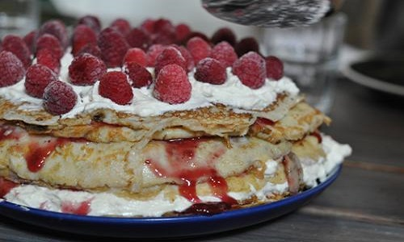

Veckans tips!

Bakmums !
Pannkakstårtan från Kanal
Dagens oemotståndliga tips bär med sig den svenska landsbydens hela charm och kan närmast betraktas ett ätbart kulturarv. Låt dig väl smaka!
Mazarintårta
Dagens tips är en verkligt delikat överraskning med en omisskännlig luxuös känsla som oförtrutet sätter guldkant på vilken fikapaus som helst, var helst den dras fram ur en ugn nära dig. Låt dig väl smaka!
Äppelpaj
Dagens tips är en sann klassiker, lika utsökt som gångbar i alla sammanhang. Med syrlighet från äpplen, knäckighet och den självklara finessen från en klick grädde (som väl närmast manifesterar sig själv vid sidan av äppelpajen där den ligger och riktigt pöser på tallriken) uppfyller detta bakverk alla önskningar som möjligen kan hysas.
Pecanpaj
Dagens tips är riktig en uppstickare, lika frisk och läcker som ett det allra mildaste och mest förföriska av medelhavets alla havsbris. Ingen kan motstå en skärva av detta bakverk, det vore att neka sig själva livet. Nej- ät och njut och glöm alla sorger.